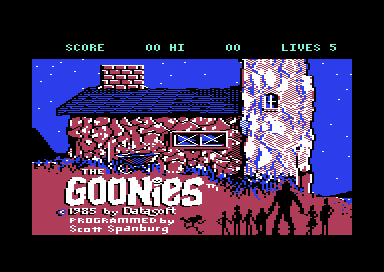

<meta charset="utf-8">
<meta name="viewport" content="width=device-width, initial-scale=1">
<title>{{title}}</title>
<link rel="preconnect" href="https://fonts.googleapis.com">
<link rel="stylesheet" href="https://fonts.googleapis.com/css2?family=Lato:wght@400;700;900&family=IBM+Plex+Mono:wght@400;500&display=swap">
<link rel="stylesheet" href="reference/goonies-page.css">
<!-- tabs -->
<header class="hero">
  <p class="eyebrow">{{platform}} · {{year}} · {{publisher}}</p>
  <h1>{{title}}</h1>
  <p class="sub">Eight single-screen puzzles for two Goonies at once, drawn in four colours with no hardware sprites, and a game that never ends: finish the pirate ship and it starts again from the hideout, score and lives kept.</p>
</header>
<main class="wrap">
<section id="game">
  <p class="fig">The game</p>
  <h2 class="t">Two Goonies, eight screens, and One-Eyed Willy's treasure</h2>
  <p>Datasoft's game follows the 1985 film. A gang of children called the Goonies find a pirate's treasure map, and the trail leads from the Fratelli gang's hideout through caverns under the town to One-Eyed Willy's ship.<sup class="fn"><a href="about.html#src-1" title="C64-Wiki, The Goonies">1</a></sup> Each of the eight scenes is one screen, and in each the player has to get two Goonies to its exit.</p>
  <p>Neither Goonie can do it alone. One stands on the money press so that Mama Fratelli leaves her post, while the other knocks over a water tank to put out a fire. Fire on the joystick swaps which Goonie the stick moves, and the other stands where it was left. With F3 on the title, two players control one Goonie each, at the same time, with a joystick in each port.</p>
  <figure class="overview-shot"><figcaption>The title screen. The attract mode that follows plays a recorded demonstration of each scene in turn.</figcaption></figure>
  <p class="overview-links"><a href="gameplay.html">See how each scene is solved</a><a href="levels.html">Explore the scenes' collision maps</a></p>
</section>

<section id="makers">
  <p class="fig">The makers</p>
  <h2 class="t">Two of the makers left their names in the program</h2>
  <p>Scott Spanburg programmed the game, and the C64-Wiki credits the graphics to Kelly Day and the music to John A. Fitzpatrick.<sup class="fn"><a href="about.html#src-1" title="C64-Wiki, The Goonies">1</a></sup><sup class="fn"><a href="about.html#src-2" title="Wikipedia, The Goonies (1985 video game)">2</a></sup> The game shows none of these names. A key nobody documented, V, prints a version line on the status line instead, V 1 BY SES (<code>$84E8</code>). That the initials SES are Spanburg's is an inference.</p>
  <p>Fitzpatrick's name is in the program in full. The music driver carries the text PEARL MUSIC PLAYER COPYRIGHT 1984 JOHN A. FITZPATRICK (<code>$BA34</code>), which no screen shows. The <a href="music.html">Music</a> tab plays the four tunes through a port of that driver.</p>
</section>

<section id="reception">
  <p class="fig">Reception</p>
  <h2 class="t">Reviewers liked the puzzles and not the graphics</h2>
  <p>In Britain the game came out under the U.S. Gold label, at £9.95 on cassette and £14.95 on disk.<sup class="fn"><a href="about.html#src-3" title="ZZap!64 9, as transcribed on GameBase64">3</a></sup> <i>ZZap!64</i> reviewed it in issue 9, on sale from 12 December 1985, and gave it 67 %. The panel found that "the problems posed on each screen are nicety [nicely] thought out", and its rating for the two-Goonie controls read "Novel control method is fun."<sup class="fn"><a href="about.html#src-3" title="ZZap!64 9, as transcribed on GameBase64">3</a></sup></p>
  <p>The same review gave the graphics 42 %, "crude in appearance and certainly lacking in colour", and the sound 35 %, "Terrible tunes and few FX". One reviewer complained of "a distinct lack of colour, with only four used!" The code agrees: every scene is drawn in black, red, blue, and white, the same four everywhere (<a href="graphics.html">Graphics</a>). The overall verdict was "Fun, but we hope the movie's better."</p>
  <p><i>Commodore User</i> reviewed the Commodore 64 version in its December 1985 issue,<sup class="fn"><a href="about.html#src-4" title="Commodore User 27, December 1985">4</a></sup> with 3 out of 5 as the C64-Wiki records it, and <i>Your Commodore</i> gave it 8 out of 10 in March 1986.<sup class="fn"><a href="about.html#src-1" title="C64-Wiki, The Goonies">1</a></sup></p>
</section>

<section id="explore">
  <p class="fig">Inside the game</p>
  <h2 class="t">Explore how The Goonies works</h2>
  <p>Each tab takes one part of the game apart, from the game's own code.</p>
  <ul class="tabs-guide">
    <li><a href="gameplay.html"><b>Gameplay</b></a>: the two Goonies, the jump, how each scene is solved, the points, and the second round after the ending.</li>
    <li><a href="controls.html"><b>Controls</b></a>: up is jump, fire swaps the Goonies, and two keys the guides leave out.</li>
    <li><a href="levels.html"><b>Maps</b></a>: every scene's collision map, the rectangles the Goonies stand on, climb, and hang from (<code>$1201</code>).</li>
    <li><a href="graphics.html"><b>Graphics</b></a>: every shape in the game, drawn into the bitmap without hardware sprites, in four colours.</li>
    <li><a href="music.html"><b>Music</b></a>: the four tunes, played through a port of the Pearl Music Player (<code>$BA00</code>).</li>
    <li><a href="discoveries.html"><b>Discoveries</b></a>: a copy-protection check that runs every pass, a piece of the developers' source code, and where the code and the guides disagree.</li>
    <li><a href="source.html"><b>Source code</b></a>: the whole game disassembled and annotated.</li>
  </ul>
</section>
</main>
<footer style="margin:16px 0 0;padding:22px var(--gx) 0;border-top:1px solid #e0ded8;font-family:'IBM Plex Mono',ui-monospace,Menlo,monospace;font-size:12px;color:#80838a"><a href="https://github.com/gamesexplained/gamesexplained" style="color:#1f5fa8;text-decoration:none">GitHub</a> · <a href="https://discord.gg/3V9GWyRDWV" style="color:#1f5fa8;text-decoration:none">Discord</a><br>© Games Explained contributors. Write-ups, facts and symbol maps are available under <a href="https://creativecommons.org/licenses/by-sa/4.0/" style="color:#1f5fa8;text-decoration:none">CC BY-SA 4.0</a>; code under <a href="https://opensource.org/licenses/MIT" style="color:#1f5fa8;text-decoration:none">MIT</a></footer>
